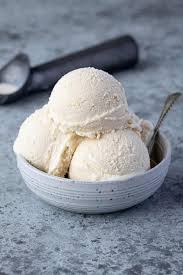

Creamy Pasta Sauce

Description:
It'll be love at first bite when you try this absolutely decadent tomato-cream sauce for pasta. With a rich texture and an irresistible flavor, this creamy tomato pasta sauce is sure to please everyone at your dinner table.
Ingredients:
- Onions
- Garlic
- Canned Tomatoes
- Spices and Seasonings
- Heavy Cream
- Butter
Steps:
- Cook onions and garlic. Cook onions over medium-heat in olive oil until translucent, then stir in garlic.
- Add Tomatoes and Spices. Add tomatoes, basil, sugar, oregano, salt, and pepper. Boil until the tomatoes have cooked down and most of the ingredients have evaporated.
- Stir in Cream and Butter. Remove the pan from heat, then stir in cream and butter. Return to the stove and simmer for about 5 minutes.